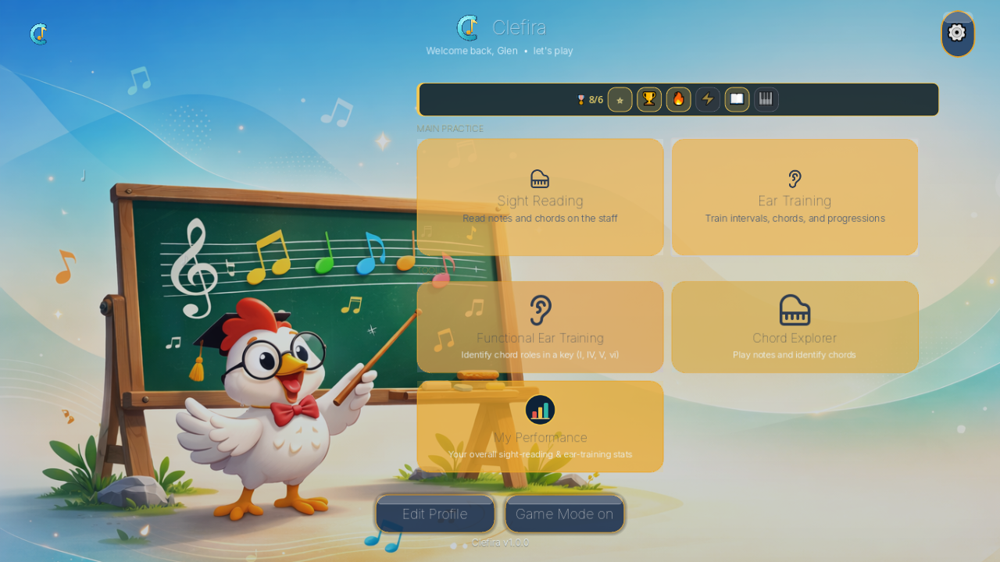
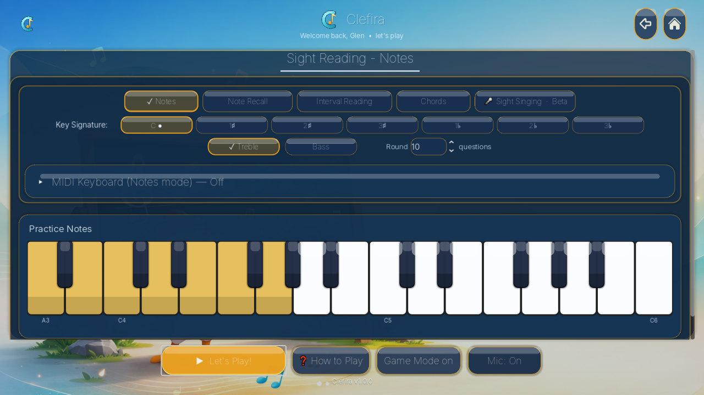
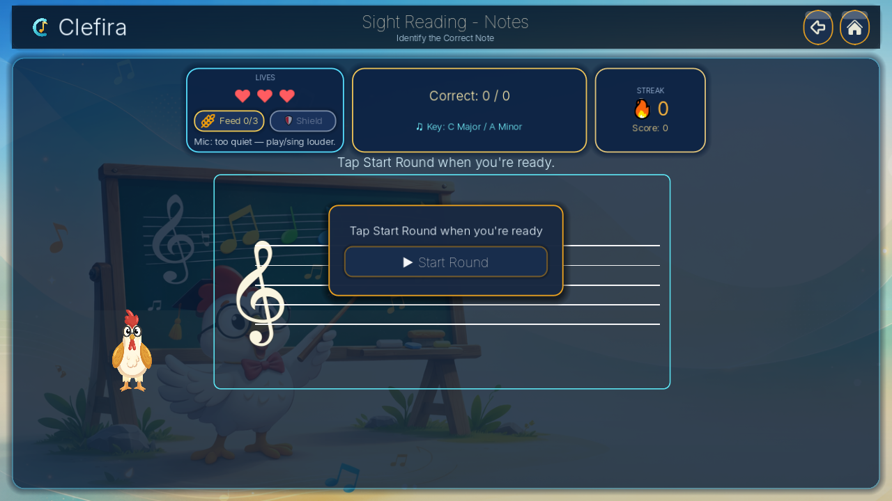
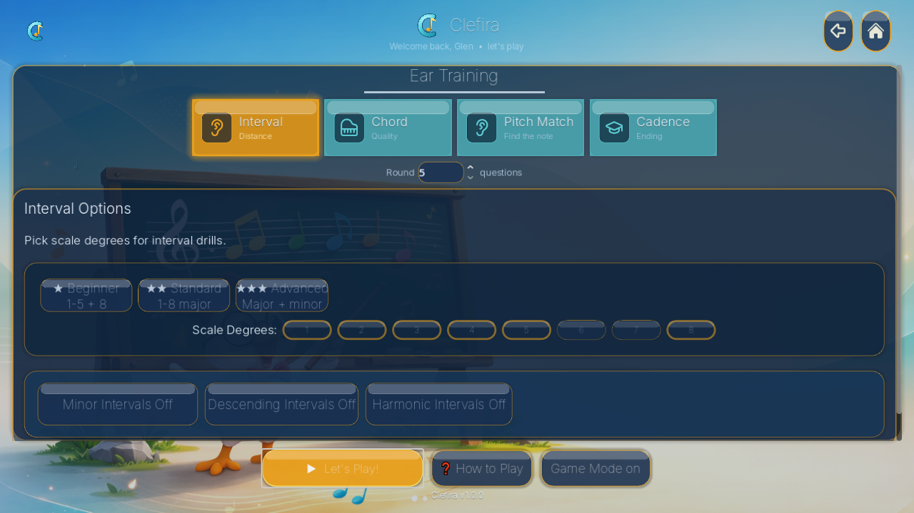
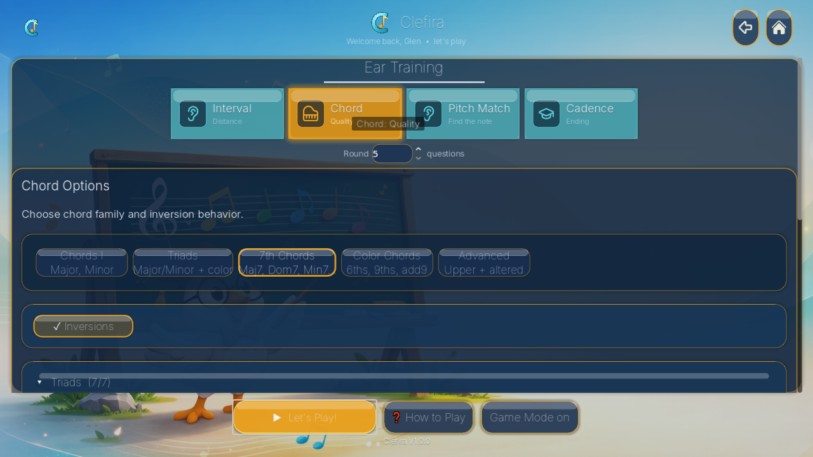
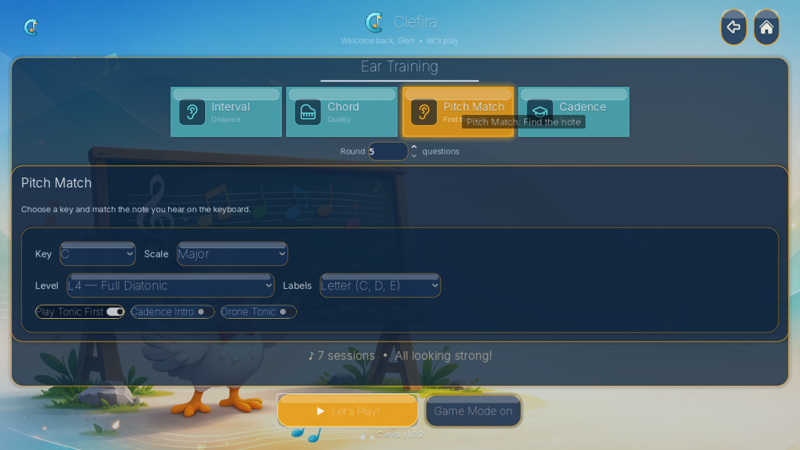
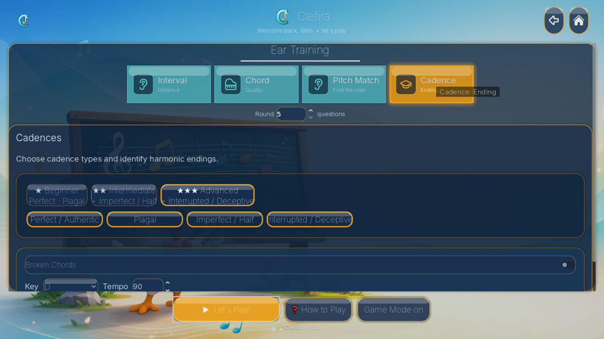
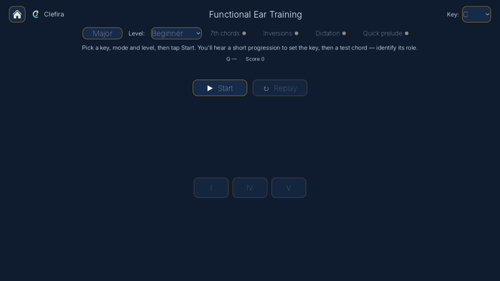

Interval Ear Training
Hear two notes, choose from three answer options, and build recognition through repeated, scored sessions.
Clefira app
Clefira combines ear training, chord recognition, sight reading, rhythm work, scoring, progress feedback, and teacher-focused workflows in one app.
Hear two notes, choose from three answer options, and build recognition through repeated, scored sessions.
Practice major, minor, augmented, diminished, suspended, and seventh chords with block and broken playback.
Read treble or bass clef notes, answer on the mini keyboard, and get immediate correct/wrong visual feedback.
Tap rhythm patterns against a timing line with BPM control, count-in, keyboard input, and beat-based patterns.
Teacher Edition is planned around student rosters, lesson notes, assignments, reports, and progress review.
Sessions include lives, streaks, XP, score, replay, slow mode, restart, go-back controls, and summary overlays.
Real gameplay from the Clefira Student Edition.








Free practice companion for students age 13+ and adult learners. Includes the core practice games and local progress.
Paid teacher/studio edition intended for student management, assignment planning, lesson continuity, and progress review.
Clefira stores practice and profile data locally by default in the Godot app user-data folder. Cloud sync is treated as opt-in and should only be used when configured and enabled.